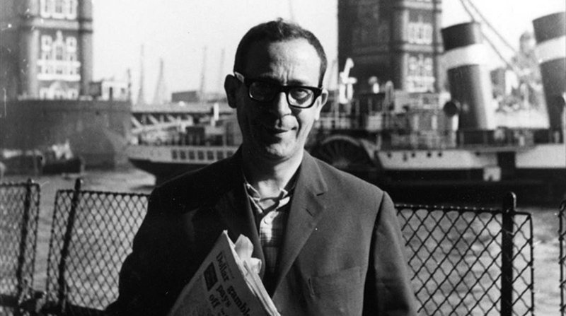

"Necesito estar solo mucho tiempo.
Tengo que reconstruirme cada día
mi mundo, que destruyen los demás."
JOSÉ MARÍA FONOLLOSA; Ciudad del hombre, 1996.
JOSÉ MARÍA FONOLLOSA
Introducción
José María Fonollosa (Barcelona, 8 de agosto de 1922-ibíd., 7 de octubre de 1991) fue un poeta español de la generación de la posguerra. Se le considera un caso singular de poeta secreto en la literatura española (al estilo de Constantino Cavafis o Pessoa), ya que se mantuvo inédito durante casi treinta años, entre 1961 y 1990, periodo en que permaneció al margen de corrientes literarias y totalmente desconocido para crítica y público.
Poemas
NO A LA TRANSMIGRACIÓN EN OTRA ESPECIE...
No a la transmigración en otra especie.
No a la post vida, ni en cielo ni en infierno.
No a que me absorba cualquier divinidad.
No a un más allá, ni aun siendo el paraíso
reservado a islamitas, con beldades
que un libro garantiza siempre vírgenes.
Porque esos son los juegos para ingenuos
en que mi agnosticismo nunca apuesta.
Mi envite es al no ser. A lo seguro.
Rechaza otro existir, tras consumida
mi ración de este guiso indigerible.
Otra vez, no. Una vez ya es demasiado.
José María Fonollosa; Ciudad del hombre: Barcelona, 2016.